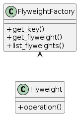

1.11. Flyweight
Flyweight is a structural design pattern that lets you fit more objects into the available amount of RAM by sharing common parts of state between multiple objects instead of keeping all of the data in each object.
:( Problem
To have some fun after long working hours, you decided to create a simple video game: players would be moving around a map and shooting each other. You chose to implement a realistic particle system and make it a distinctive feature of the game. Vast quantities of bullets, missiles, and shrapnel from explosions should fly all over the map and deliver a thrilling experience to the player.
Upon its completion, you pushed the last commit, built the game and sent it to your friend for a test drive. Although the game was running flawlessly on your machine, your friend wasn’t able to play for long. On his computer, the game kept crashing after a few minutes of gameplay. After spending several hours digging through debug logs, you discovered that the game crashed because of an insufficient amount of RAM. It turned out that your friend’s rig was much less powerful than your own computer, and that’s why the problem emerged so quickly on his machine.
The actual problem was related to your particle system. Each particle, such as a bullet, a missile or a piece of shrapnel was represented by a separate object containing plenty of data. At some point, when the carnage on a player’s screen reached its climax, newly created particles no longer fit into the remaining RAM, so the program crashed.
:) Solution
On closer inspection of the Particle class, you may notice that the color and sprite fields consume a lot more memory than other fields. What’s worse is that these two fields store almost identical data across all particles. For example, all bullets have the same color and sprite.
Other parts of a particle’s state, such as coordinates, movement vector and speed, are unique to each particle. After all, the values of these fields change over time. This data represents the always changing context in which the particle exists, while the color and sprite remain constant for each particle.
This constant data of an object is usually called the intrinsic state. It lives within the object; other objects can only read it, not change it. The rest of the object’s state, often altered “from the outside” by other objects, is called the extrinsic state.
The Flyweight pattern suggests that you stop storing the extrinsic state inside the object. Instead, you should pass this state to specific methods which rely on it. Only the intrinsic state stays within the object, letting you reuse it in different contexts. As a result, you’d need fewer of these objects since they only differ in the intrinsic state, which has much fewer variations than the extrinsic.
Let’s return to our game. Assuming that we had extracted the extrinsic state from our particle class, only three different objects would suffice to represent all particles in the game: a bullet, a missile, and a piece of shrapnel. As you’ve probably guessed by now, an object that only stores the intrinsic state is called a flyweight.
Where does the extrinsic state move to? Some class should still store it, right? In most cases, it gets moved to the container object, which aggregates objects before we apply the pattern.
In our case, that’s the main Game object that stores all particles in the particles field. To move the extrinsic state into this class, you need to create several array fields for storing coordinates, vectors, and speed of each individual particle. But that’s not all. You need another array for storing references to a specific flyweight that represents a particle. These arrays must be in sync so that you can access all data of a particle using the same index.
A more elegant solution is to create a separate context class that would store the extrinsic state along with reference to the flyweight object. This approach would require having just a single array in the container class.
Wait a second! Won’t we need to have as many of these contextual objects as we had at the very beginning? Technically, yes. But the thing is, these objects are much smaller than before. The most memory-consuming fields have been moved to just a few flyweight objects. Now, a thousand small contextual objects can reuse a single heavy flyweight object instead of storing a thousand copies of its data.
Since the same flyweight object can be used in different contexts, you have to make sure that its state can’t be modified. A flyweight should initialize its state just once, via constructor parameters. It shouldn’t expose any setters or public fields to other objects.
For more convenient access to various flyweights, you can create a factory method that manages a pool of existing flyweight objects. The method accepts the intrinsic state of the desired flyweight from a client, looks for an existing flyweight object matching this state, and returns it if it was found. If not, it creates a new flyweight and adds it to the pool.
There are several options where this method could be placed. The most obvious place is a flyweight container. Alternatively, you could create a new factory class. Or you could make the factory method static and put it inside an actual flyweight class.
Real-World Analogy
Applicability
Use the Flyweight pattern only when your program must support a huge number of objects which barely fit into available RAM.
The benefit of applying the pattern depends heavily on how and where it’s used. It’s most useful when: - an application needs to spawn a huge number of similar objects - this drains all available RAM on a target device - the objects contain duplicate states which can be extracted and shared between multiple objects
Pros
You can save lots of RAM, assuming your program has tons of similar objects.
Cons
You might be trading RAM over CPU cycles when some of the context data needs to be recalculated each time somebody calls a flyweight method.
The code becomes much more complicated. New team members will always be wondering why the state of an entity was separated in such a way.
Relations with Other Patterns
You can implement shared leaf nodes of the Composite tree as Flyweights to save some RAM.
Flyweight shows how to make lots of little objects, whereas Facade shows how to make a single object that represents an entire subsystem.
Flyweight would resemble Singleton if you somehow managed to reduce all shared states of the objects to just one flyweight object. But there are two fundamental differences between these patterns:
There should be only one Singleton instance, whereas a Flyweight class can have multiple instances with different intrinsic states.
The Singleton object can be mutable. Flyweight objects are immutable.
How to Implement
Divide fields of a class that will become a flyweight into two parts:
the intrinsic state: the fields that contain unchanging data duplicated across many objects
the extrinsic state: the fields that contain contextual data unique to each object
Leave the fields that represent the intrinsic state in the class, but make sure they’re immutable. They should take their initial values only inside the constructor.
Go over methods that use fields of the extrinsic state. For each field used in the method, introduce a new parameter and use it instead of the field.
Optionally, create a factory class to manage the pool of flyweights. It should check for an existing flyweight before creating a new one. Once the factory is in place, clients must only request flyweights through it. They should describe the desired flyweight by passing its intrinsic state to the factory.
The client must store or calculate values of the extrinsic state (context) to be able to call methods of flyweight objects. For the sake of convenience, the extrinsic state along with the flyweight-referencing field may be moved to a separate context class.
UML of the example implemented in this repository
